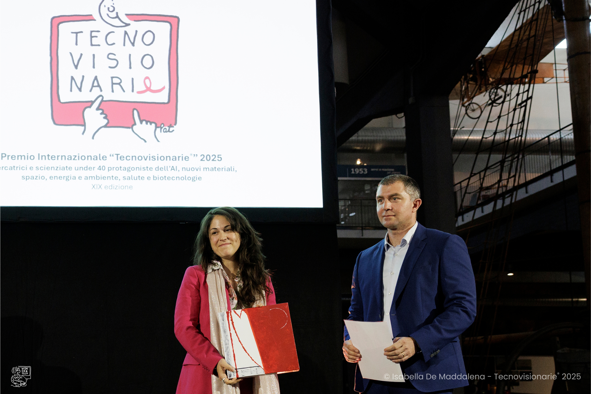
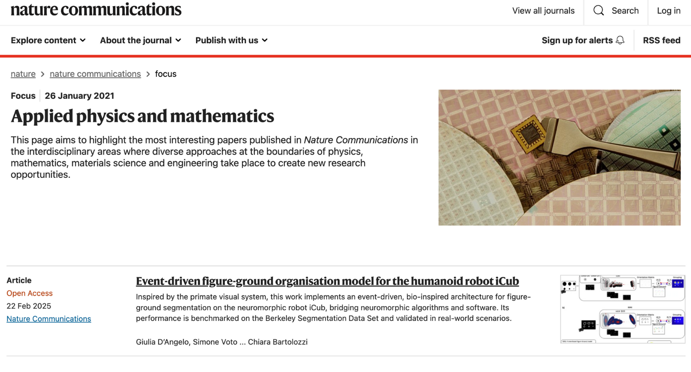
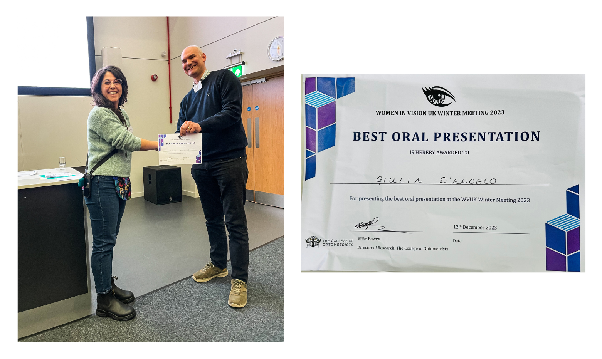
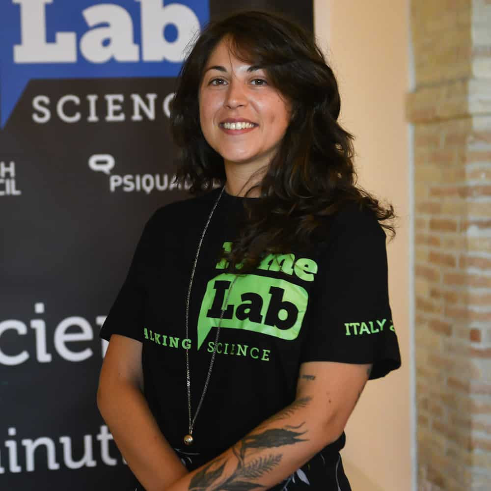
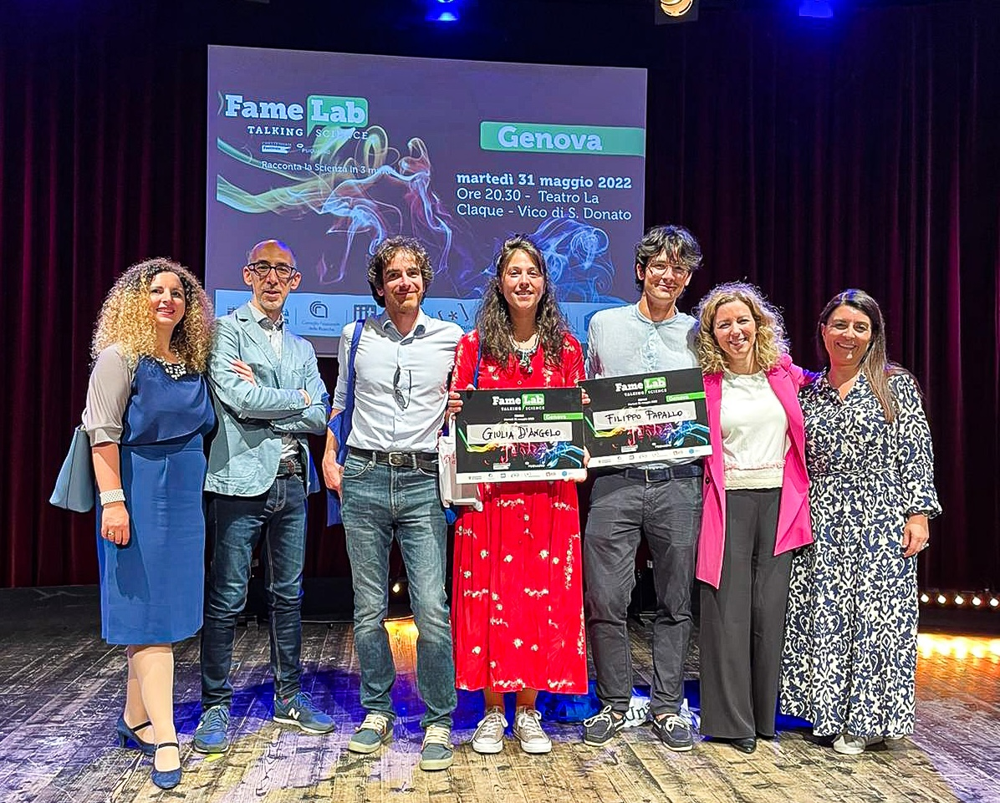
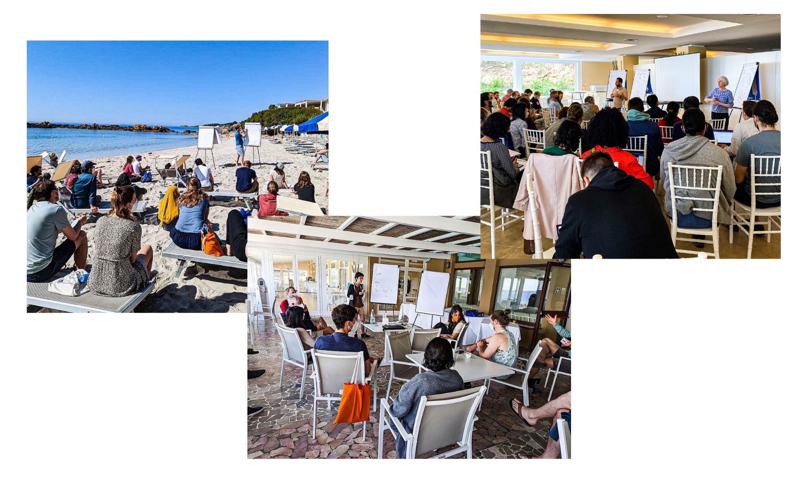
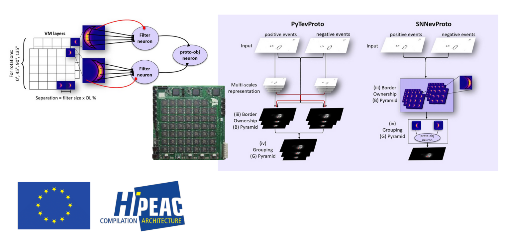

2025 Tecnovisionarie® International Award
Celebrating women under 40 leading innovation in AI, new materials, space, energy, environment, health, and biotech.

2025 Nature Communications Editors’ Highlights
"Event-Driven Figure-Ground Organisation model for the humanoid robot iCub"
Top 50 paper in Applied Physics & Mathematics, Nature Communications.

2023 Best Oral Presentation
Women in Vision UK, University of Cambridge, Winter Meeting.
2023 President's Doctoral Scholar Award
University of Manchester’s highest accolade for academic excellence and leadership.


2022 FameLab National Finalist
3 minute science speech at the FameLab National Final.

2022 NEUROTECH EU Fellowship
Fellowship to attend the Neuromorphic Computing Workshop Capocaccia 2022.

2019 HiPEAC EU Collaboration Grant
3 months collaboration grant with Adam Perrett from The University of Manchester, finalised with publication: “Event-driven bio-inspired attentive system for iCub humanoid robot on SpiNNaker”.